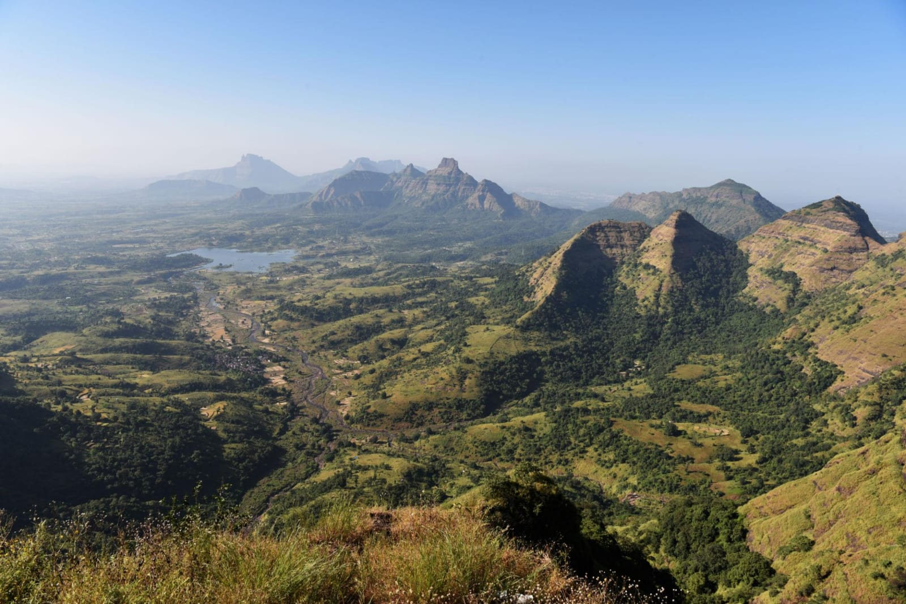
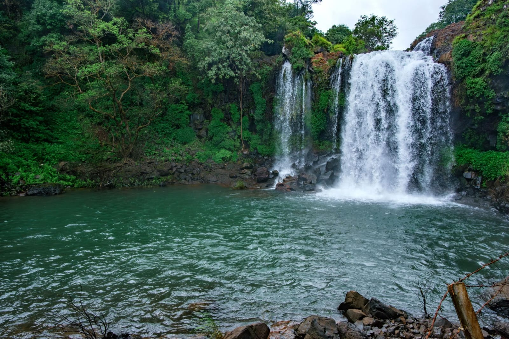
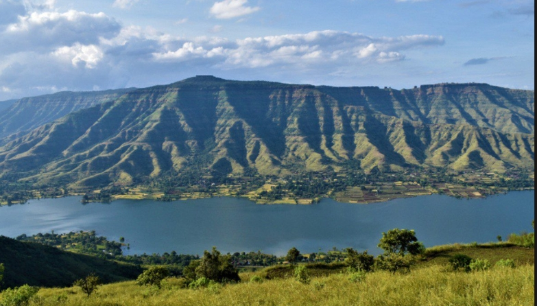

Nature is the most beautiful and attractive surrounding around us which make us happy and provide us natural environment to live healthy. Our nature provides us variety of beautiful flowers, attractive birds, animals, green plants, blue sky, land, running rivers, sea, forests, air etc. Our God has created a beautiful nature for the healthy living of us. Our nature is a great blessing for us. It provides us with all the resources to live our life.

Lonavala is a hill station and a municipal council in Pune district in the Indian state of Maharashtra. It is located at a distance of 64 km from Pune and 96 km from Mumbai. Lonavala is a popular weekend destination for people from Mumbai and Pune. The town is known for its scenic beauty, pleasant climate, and various tourist attractions such as the Bhushi Dam, Tiger's Leap, Rajmachi Fort, and the Lonavala Lake. location of lonavala
| Things To Try in Lonavala | Travel Tips |
|---|---|
| Eat famous Lonavala chikki | Monsoon road can be slippery,so wear good shoes |
| Enjoy hot chai and bhajiyas during rain | Carry rainwear during monsoon |
| Try camping near Pawna Lake | Weekends are crowded,especially at Bhushi Dam and Tiger Point |
| Some Places to Visit |
|---|
| Bhushi Dam:View on Maps |
| Tiger's Leap:View on Maps |
| Rajmachi Fort:View on Maps |
| Pawna Lake:View on Maps |

Matheran is a hill station and a municipal council in the Raigad district of Maharashtra, India. It is located at an elevation of 800 meters above sea level and is known for its scenic beauty and pleasant climate. Matheran is a popular tourist destination, especially during the monsoon season when the hills are covered in lush greenery. The town is also known for its colonial architecture, narrow winding roads, and stunning viewpoints such as Panorama Point, Echo Point, and Charlotte Lake. location of matheran
| Things To Try in Matheran | Travel Tips |
|---|---|
| Try local snacks like vada pav,corn, and chikki | Private vehicles are not allowed, so use the toy train or walk |
| trekking in the hills | Carry water and snacks as there are limited food options |
| Watch sunrise and sunset from viewpoints | Best time to visit is during monsoon for lush greenery |
| Some Places to Visit |
|---|
| Panorama Point:View on Maps |
| Echo Point:View on Maps |
| Charlotte Lake:View on Maps |
| Louisa Point:View on Maps |

Mulshi Dam is a popular tourist destination located in the Pune district of Maharashtra, India. It is situated on the Mula River and is surrounded by lush greenery and scenic hills. The dam is a popular spot for picnics, boating, and trekking. The area around the dam is also known for its rich biodiversity, with many species of birds and animals found in the region. location of Mulsi Dam
| Things to do in Mulshi Dam | Travel Tips |
|---|---|
| Enjoy the drive through Tamhini Ghar | Best time:June-September for waterfalls and greenery,October-February for pleasant weather |
| Go boating on the dam | Carry water and snacks as there are limited food options |
| Trek to nearby forts like Tikona and Tung | Wear comfortable shoes for trekking |
| Some Places to Visit |
|---|
| Mulshi Dam Viewpoint:View on Maps |
| Tamhini Ghat:View on Maps |
| Andharban Trek:View on Maps |
| Tikona Fort:View on Maps |

Thoseghar Waterfalls is a popular tourist destination located in the Satara district of Maharashtra, India. It is situated in the Western Ghats and is known for its stunning natural beauty and cascading waterfalls. The waterfalls are surrounded by lush greenery and are a popular spot for picnics, trekking, and nature walks. The area around the waterfalls is also home to a variety of flora and fauna, making it a great destination for nature lovers. location of Thoseghar Waterfalls
| Things to do at Thoseghar Waterfalls | Travel Tips |
|---|---|
| Enjoy the view of the waterfalls from the viewpoint | Best time to visit is during monsoon for full waterfall flow |
| Go trekking to the base of the waterfalls | Wear sturdy shoes and be cautious of slippery paths |
| Have a picnic near the waterfalls | Carry your own food and water as there are limited facilities |
| Some Places to Visit |
|---|
| Thoseghar Waterfalls Viewpoint:View on Maps |
| Mini Thoseghar Waterfalls:View on Maps |
| Kaas Plateau:View on Maps |
| Sajjangad:View on Maps |

Panchgani is a hill station and a municipal council in the Satara district of Maharashtra, India. It is located at an elevation of 1,334 meters above sea level and is known for its scenic beauty and pleasant climate. Panchgani is a popular tourist destination, especially during the summer months when people from nearby cities come to escape the heat. The town is also known for its strawberry farms, colonial architecture, and stunning viewpoints such as Table Land, Sydney Point, and Parsi Point. location of Panchgani
| Things To Try in Panchgani | Travel Tips |
|---|---|
| Try fresh strawberries and strawberry-based products | Best time to visit is during strawberry season (December to February) |
| Go paragliding for a bird's eye view of the hills | Book paragliding in advance, especially during peak season |
| Visit the Table Land for panoramic views and horse riding | Wear comfortable shoes for walking on the rocky terrain |
| Some Places to Visit |
|---|
| Table Land:View on Maps |
| Sydney Point:View on Maps |
| Parsi Point:View on Maps |
| Devil's Kitchen:View on Maps |
Nature is the most beautiful and attractive surrounding around us which make us happy and provide us natural environment to live healthy. Our nature provides us variety of beautiful flowers, attractive birds, animals, green plants, blue sky, land, running rivers, sea, forests, air etc. Our God has created a beautiful nature for the healthy living of us. Our nature is a great blessing for us. It provides us with all the resources to live our life.